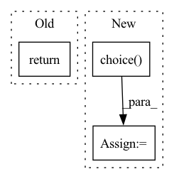

Pattern ID :36333
Before Change
try:
img = self.loader(os.path.join(self.root, filename))
except:
return torch.zeros((3, 32, 32))
if self.transform is not None:
img = self.transform(img)After Change
def __getitem__(self):
cur_n_views = random.randint(self.max_views) + 1
filenames = random.choice( self.im_list[self.cur_idx], cur_n_views, replace=False)
imgs = torch.zeros(cur_n_views, 3, 128, 128)
try:
for view in range(cur_n_views):
imgs[view,:,:,:] = self.loader(os.path.join(self.root, self.cat_model_list[self.cur_idx][0], self.cat_model_list[self.cur_idx][1], filenames[view]))
if self.transform is not None:
imgs[view,:,:,:] = self.transform(imgs[view,:,:,:])
except:
return imgs
In pattern: SUPERPATTERN
Frequency: 5
Non-data size: 3
Instances Fragment ID: 102932226
Project Name: alex-golts/pytorch-3d-r2n2
Commit Name: 26734669a8887661262dc3f913074922dc7445e8
Time: 2018-05-22
Author: alexgbiz@gmail.com
File Name: dataset.py
M Class Name: Dataset
N Class Name: Dataset
M Method Name: __getitem__(1)
N Method Name: __getitem__(2)
M Parent Class: data.Dataset
N Parent Class: data.Dataset
M File Name: dataset.py
N File Name: dataset.py
M Start Line: 75
M End Line: 84
N Start Line: 90
N End Line: 101
Before Change
:return: list of headers
"""
if order=="BOMR":
return ["background", "objectives", "methods", "results"]
elif order=="OBMR":
return ["objectives","background","methods","results"]
elif order=="MOBR":After Change
print("not well written.., returned the default BOMR")
result= ["background", "objectives", "methods", "results"]
condition= random.choice( [0,1])
if condition:
result = ["other"] + result
else:
result += ["other"] Fragment ID: 102932210
Project Name: yassinekdi/naimai
Commit Name: 85e94faaa8106b08dbad5fbf5c752b9ea4ea7991
Time: 2022-03-17
Author: keptsa@yahoo.fr
File Name: data_constructors/omr_classif_data.py
M Class Name: OMRData
N Class Name: OMRData
M Method Name: get_headers_order(2)
N Method Name: get_headers_order(2)
M Parent Class:
N Parent Class:
M File Name: data_constructors/omr_classif_data.py
N File Name: data_constructors/omr_classif_data.py
M Start Line: 118
M End Line: 125
N Start Line: 150
N End Line: 164
Before Change
print("not implemented")
Dataset=None
return Dataset.get_dataset()
// def plot_pose_estimation_summary():
//After Change
//skip the dataset
for group in ucf_dataset:
ucf_dataset[group] = np.random.choice( ucf_dataset[group], 1)
//handling sampling here
return ucf_dataset Fragment ID: 102932214
Project Name: rvl-lab-utoronto/video_similarity_search
Commit Name: c8ed3a4e41908cabd1d9e2257efc7d2e60cc9755
Time: 2020-08-05
Author: sherrychen127@gmail.com
File Name: pose_estimation/extract_pose_estimation.py
M Class Name: AnonimousClass
N Class Name: AnonimousClass
M Method Name: get_vid_dataset(6)
N Method Name: get_vid_dataset(6)
M Parent Class:
N Parent Class:
M File Name: pose_estimation/extract_pose_estimation.py
N File Name: pose_estimation/extract_pose_estimation.py
M Start Line: 139
M End Line: 147
N Start Line: 179
N End Line: 199
Before Change
self.max_samples = self.n_samples if max_samples is None else max_samples
def __iter__(self):
return iter(torch.randperm(self.n_samples)[: self.max_samples])
def __len__(self):
return self.max_samplesAfter Change
yield from torch.randperm(self.n_obs)[: self.n_samples]
else:
for _ in range(self.n_batch):
batch = np.random.choice( self.batch_list)
yield from self.choice(torch.where(self.batches == batch)[0])
def __len__(self):
return self.n_samples Fragment ID: 102932213
Project Name: mics-lab/scyan
Commit Name: 21be5d938a79ffbeb98f141f0d3bbebe273591d8
Time: 2023-01-04
Author: quentin.blampey@student.ecp.fr
File Name: scyan/data/tensors.py
M Class Name: RandomSampler
N Class Name: RandomSampler
M Method Name: __iter__(1)
N Method Name: __iter__(1)
M Parent Class: torch.utils.data.Sampler
N Parent Class: torch.utils.data.Sampler
M File Name: scyan/data/tensors.py
N File Name: scyan/data/tensors.py
M Start Line: 35
M End Line: 35
N Start Line: 62
N End Line: 69
Before Change
sp_clip = self._load_clip(s_positive, self.positive_temporal_transform)
dp_clip = self._load_clip(d_positive, self.positive_temporal_transform)
return (a_clip, sp_clip, dp_clip), (a_target, sp_target, dp_target)
def _load_clip(self, data, temporal_transform):
path = data["video"]After Change
anchor=self.data[index]
a_target = anchor[self.target_type]
p_type = np.random.choice( self.positive_types, p=[self.positive_sampling_p, 1-self.positive_sampling_p])
if p_type == "same_inst":
positive = anchor.copy()
else: //sample positive from a different cluster Fragment ID: 102932218
Project Name: rvl-lab-utoronto/video_similarity_search
Commit Name: f902d74aed0fdc79b6f3b6710e1b82db83561384
Time: 2020-09-04
Author: sherrychen127@gmail.com
File Name: datasets/triplets_dataset.py
M Class Name: TripletsData
N Class Name: TripletsData
M Method Name: __getitem__(2)
N Method Name: __getitem__(2)
M Parent Class: data.Dataset
N Parent Class: data.Dataset
M File Name: datasets/triplets_dataset.py
N File Name: datasets/triplets_dataset.py
M Start Line: 70
M End Line: 86
N Start Line: 75
N End Line: 105